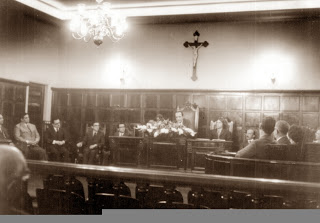
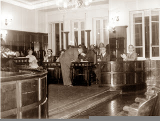

História
ATA DA FUNDAÇÃO
 Iniciando a reunião, o professor José Luiz Pasin expôs as finalidades principais do Instituto de Estudos Valeparaibanos, destinado a centralizar os estudos e pesquisas sobre a região valeparaibana, congregar os estudiosos e pesquisadores, manter uma biblioteca, arquivo, filmoteca, hemeroteca e mapoteca e promover simpósios, congressos, seminários, cursos, pesquisas e outras promoções relacionadas com o Vale do Paraíba.
Em seguida foram lidos e aprovados os Estatutos do Instituto de Estudos Valeparaibanos, sendo eleita por aclamação a primeira diretoria e Conselho Administrativo para o triênio 1973-1976, assim constituídos: Diretor: Professor José Luiz Pasin; Vice-Diretor: Professor Francisco Sodero Toledo; Secretário: Professora Thereza Regina de Camargo Maia;Tesoureiro: Professora Catarina Aparecida Vieira Vilela.
 Conselho Administrativo: Professora Maria de Lourdes Borges Ribeiro, Doutor José Carlos Ferreira Maia, Professora Mariza de Souza Menezes, Professor Benedito Carlos Marcondes Coelho, Professora Terezinha Paiva de Faria, Doutor F. A. Lacaz Netto, Professora Wania Aparecida Nogueira, Professor Paulo Pereira dos Reis e Doutor Francisco de Assis Barbosa.
Deliberou-se, a seguir, que a sede oficial do Instituto de Estudos Valeparaibanos será no edifício do Centro Social de Guaratinguetá, praça Conselheiro Rodrigues Alves, número quarenta e oito, segundo andar.
A instalação oficial do Instituto de Estudos Valeparaibanos será realizada no próximo mês de outubro, em data a ser marcada. Como primeira realização oficial, o Instituto de Estudos Valeparaibanos promoverá em Guaratinguetá, em julho de hum mil novecentos e setenta e quatro, o II Simpósio de História do Vale do Paraíba, relacionado com o tema”O Desbravamento e o Povoamento do Vale do Paraíba – Séculos XVII e XVIII”.
Nada mais havendo a tratar, foi encerrrada a reunião de fundação do Instituto de Estudos Valeparaibanos, da qual, para constar, foi lavrada a presente Ata de Fundação, a qual, vai pelos presentes assinada: José Luiz Pasin, Maria de Lourdes Borges Ribeiro, thereza Regina de Camargo Maia, Catarina A. Vieira Vilela, Francisco Sodero Toledo, José Carlos Ferreira Maia, Terezinha Paiva de Faria, Mariza de Sou\za Menezes, Wania Aparecida Nogueira, Benedito Carlos Marcondes Coelho, Francisco de Assis Barbosa, Paulo Pereira dos Reis.